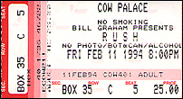

|
February 11, 1994 Cow Palace. San Francisco, CA
 Interview with Geddy
by KSJO in San Jose (646k)
The San Francisco Chronicle
Rush Rolls On Rush saunters onto the stage of the Great Western Forum to the strains of "Also Sprach Zarathustra," the symphonic slab of bombast immortalized in Stanley Kubrick's "2001: A Space Odyssey." The band often has been accused of pretentiousness, but this decidedly regal entrance comes off more like inspired campiness -- the good-humored musical equivalent of rolling out a red carpet. CRITICAL INDIFFERENCE If any band deserves to celebrate itself, it's Rush. Formed 20 years ago in Toronto, the trio has endured years of critical indifference to become one of pop music's top concert draws. Many of the band's 19 albums have sold more than a million copies, and bold new acts such as Primus and Living Colour have spoken of their respect for the Canadian band. Rush is on the road again, this time promoting its new Atlantic Records album Counterparts. (The band appears at the Cow Palace Friday night and at the San Jose arena on Saturday.) The album seems well on its way to duplicating the success of its predecessors, fueled by the popularity of the hits "Stick It Out" and "Cold Fire." AN EXPLANATION Attempting to explain Rush's puzzling popularity, drummer/lyricist Neil Peart struggles to sort out his feelings. "Phoenix was the last show we played, and I remember being on stage and thinking 'Why?'" Peart said. "All these people still come back to see us. I guess it's a holistic thing, where the sum is greater than the parts. It must be this larger thing that surrounds us like an aura -- the sounds we create together, and the integrity and dedication we bring to it." Ron Nenni, program directory at San Jose's KOME-FM, says Rush fans are some of the most loyal he's ever seen. He credits the band's success to musical and lyrical savvy. "They're some of the most highly regarded musicians in rock," Nenni said. "Not only has their music evolved, their lyrical content is very interesting too. There's a kind of science fiction/history influence in the lyrics. If you attend a Rush concert you see a lot of the fans look kind of nerdy. You might say they appeal to intellectual rock fans." Peart would no doubt be pleased to hear such testimonials -- one gets the impression that he feels the band's efforts sometimes go unappreciated. DEDICATION TO CRAFT "The audience can't know that creating my drum parts take three days of blisters, or that I sift through every word and note," Peart said. "But this kind of dedication adds up to one thing, and that's quality. I hope there's a sense in the audience that care has been taken." Peart's third-floor suite at the posh Four Seasons feels as homey as a hotel room can. A laptop computer sits atop a desk in the living room. Emergency supplies such as a flashlight and a radio are on hand in case of aftershocks from the recent earthquake. A bicycle stands in the foyer. After his interviews are completed, Peart will pedal through Beverly Hills to the grittier community of Inglewood for a sound check with his bandmates, singer-bassist-keyboardist Geddy Lee and guitarist Alex Lifeson. It's a trek many Angelenos would hesitate to make, but Peart says his thirst for adventure has led him down more dangerous roads in Europe and Africa. He says such explorations are essential for his sanity. HARMLESSLY ECCENTRIC "Biking is good for a balance of real life and getting out of the bubble," the drummer said. "We never wanted to be a band that goes from the limo to the hotel to the airplane. On a bike you're a harmless eccentric. Of course, you tell people you're biking to Inglewood and they say, 'Don't wear a red bandanna.' But who's going to bother a bike rider? For me (biking) helps me keep life big." Rush's new album takes its share of similarly risky turns. Musically speaking, Counterparts is leaner and more straightforward than previous efforts, with a pop sensibility similar to the band's best-selling 1981 album, "Moving Pictures." But most potent is the new album's compassionate lyricism. Songs such as "Nobody's Hero," "Everyday Glory" and "Animate" detail Peart's efforts to come to terms with death, as well as his determination to get in touch with his feminine side. "I'd been doing a lot of thinking about duality and how it applies to questions of culture, gender and of race," Peart explained. "Where gender is concerned I think the feminine is beautiful, but I also think the masculine side is good. I concluded that i don't have to reconcile them. I can have them both." Inspired by the philosophical writings of Nietzche, Carl Jung and Camille Paglia, Peart began examining some of the bleaker aspects of Western values -- homophobia, pop culture idolatry and sexism. Counterparts often bridges the chasm between popular perceptions and opposing viewpoints. TWO TRAGIC DEATHS On "Nobody's Hero" Peart mourns the tragic deaths of two friends, one of whom was gay. "It began as an abstract inquiry into the Western idea of a hero, and whether that idea is good," Peart said. "I finally nailed it down to athletes, entertainers and politicians -- these people who are supposed to be superhuman with no faults. A kid grows up thinking a hero is some superhuman deity beyond normal mortal limits. How can anyone aspire to attain that? Why admire those people rather than somebody who has worked 25 years to learn a skill, or a person in the neighborhood who sets a good example? "That's why I included the lines about the first gay guy I knew. I was about 18 when I met him, and he used to take me to his parties and it was never a problem for me. As I say in the song, he introduced me to another reality. He's nobody's hero in most people's perception, but as a person who's left behind family and friends he definitely qualifies as a hero." Acknowledging one's feminine side, expressing compassion for a late gay friend -- these are touchy subjects for a band with a decidedly masculine following. Peart admits the average Rush fan seems to be a straight white male, a fact he describes as "unfortunate." "People of darker persuasions are rare, and that's too bad because I consider myself to be multicultural by nature," Peart said. "If anything I'd like to see a surge of black female fans, but what can I do? You can't choose your audience. "But that being said, what better audience to receive these kind of messages? People had a number of misconceptions and fears about 'Nobody's Hero' because it expressed approval of homosexuality, and they thought there might be some homophobic reaction to it. I think that song expressed sentiments that merit some thought." TRIO WORKED THE CLUBS Rush was formed in 1969 by Lee, Lifeson and drummer John Rutsey. The trio worked the club circuit until 1973 when they decided to record an album. Just months before the band's first U.S. tour Rutsey was replaced by Peart, a move that would signal a substantial change in the band's sound. Peart's jazzy playing and conceptual lyrics lifted Rush from the blues-rock doldrums to more mystical realms. On early albums such as "2112," "A Farewell To Kings" and "Hemispheres," Rush exhibited a penchant for bustling arrangements and indulgent playing. As the '80s approached and the public grew weary of exhibitionist rock practiced by Yes and Emerson, Lake and Palmer, it seemed Rush was destined for a bargain bin fate. But the band displayed surprising moxie on its 1980 album "Permanent Waves," which featured more concise pop melodies. The next year the band released what would become its most popular album, "Moving Pictures." Inspired by jazz fusion, new wave rock and African pop, "Moving Pictures" was a genuine coup -- a successful reconciliation of pop song structures and virtuosic performance. "We'd see all these people at our shows who had no idea why they were there or what we were doing," Peart recalled. "For some reason we were in that year. That record and that tour did twice the business we did before or since. So I guess in a way it is a definitive record." A REFINED FORMULA More recent albums such as "Presto" and "Roll The Bones" have found Rush refining its formula. Where the emphasis was once on flawless execution, the band now reaps the greatest joy from composing -- placing its formidable musical chops into tuneful context. "Once things start flowing we're truly like 'Whoopie!'" Peart said. "I remember when we were doing songwriting for the new album, and Alex and Geddy would run into my room pleading for the lyrics and screaming, 'We're coffee achievers!' There's a genuine childlike excitement to the whole process." Geddy Lee, Neil Peart and Alex Lifeson of Rush -- they play the Cow Palace on Friday.
|